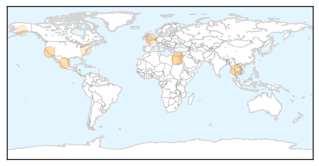
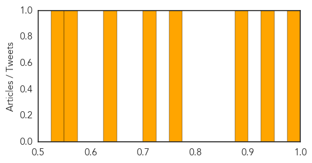

Meningitis
30-Day Web Trend
3 alerts, 0 warnings
30-Day Twitter Trend
1 alerts, 0 warnings
Article Locations

Article Confidences

Top Articles:
-
No articles found for Apr 09, 2014
Top Tweets:
-
No tweets found for Apr 09, 2014
Hepatitis
30-Day Web Trend
4 alerts, 1 warnings
30-Day Twitter Trend
0 alerts, 0 warnings

Article Locations
Article Confidences
Top Articles:
- 0.996
- News Scan for Apr 09, 2014
- 0.938
- Rice Elementary student diagnosed with Hepatitis A
- 0.877
- WHO urges global push to treat hepatitis C
- 0.756
- WHO issues its first hepatitis C treatment guidelines
- 0.722
- WHO to reduce prices of hepatitis C drugs
- 0.638
- New Treatments May Defuse Viral Time Bomb
- 0.551
- NationalJournal
- 0.533
- Food Poisoning Risk Increases at a U.S. Restaurant
Top Tweets:
-
No tweets found for Apr 09, 2014